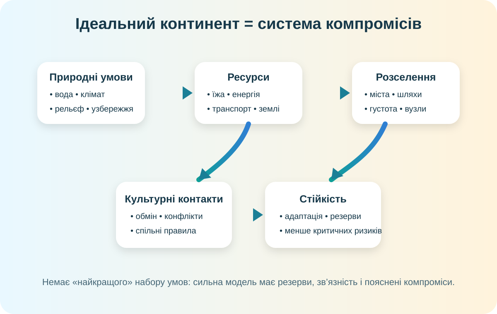

Спроєктуйте не рай, а стійку систему
Уявіть, що материк заселяють кілька людських спільнот. Ви відповідаєте за фізичну географію, водні ресурси, транспортну доступність, природні ризики та простір для різних культур.

Модель показує причинний ланцюг: природні умови → ресурси → розселення → культурні контакти → ризики й рішення.
Паспорт команди
Проєктна форма відкриється після заповнення трьох полів.
Карта-розвідка: де цивілізаціям було «легше стартувати»?
Роздивіться карту світу. Знайдіть великі річкові долини, морські узбережжя, рівнини та гірські бар’єри. Не шукайте одну «правильну точку» — шукайте закономірність.
Зберіть «фізичний каркас» континенту
Оцініть кожний чинник від 0 до 3. Максимум — не обов’язково найкраща відповідь: важливий баланс.
Бал — лише сигнал. Нижче поясніть, чому Ваш набір чинників не створює критичної залежності від одного ресурсу.
Додайте людей: етнос ≠ держава ≠ цивілізація
Етнос — історично сформована спільнота з елементами спільної культури та самоідентифікації. Держава — політична організація території. Цивілізація — ширша історико-культурна система. Змішувати ці поняття в одну коробку дуже зручно — і дуже неправильно.
Модель розселення
Культурна мозаїка
Перевірте модель реальними геоданими
Оберіть щонайменше три джерела. Ваш проєкт має наслідувати реальні закономірності, а не фантазію про «річка тече вгору, бо так красивіше».
Супутникові шари: хмари, пил, пожежі, рослинність, лід.
Відкрити ↗Знімки Sentinel для порівняння ландшафтів і земного покриву.
Відкрити ↗Реальні поселення, дороги, річки, узбережжя та інфраструктура.
Відкрити ↗Зберіть паспорт «Ідеального континенту»
Назва може бути будь-якою. Географічна логіка — ні.
Ваш проєктний паспорт
Фінальний CER
Теза → докази → пояснення причинного зв’язку.
10 балів за проєкт
Високий результат = не «гарний материк», а модель, у якій видно причинні зв’язки та обмеження.
Домашнє завершення
Доробіть карту/постер/цифрову схему «Ідеального континенту»: позначте рельєф, 2–3 річкові басейни, кліматичні області, 4–6 міст, транспортні осі, культурні регіони й одну зону природного ризику. Додайте 3 посилання на джерела та короткий висновок.